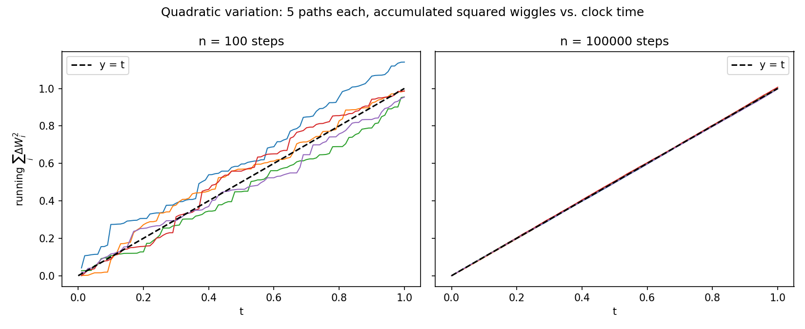

02 - New Calculus¶
Recall that Brownian motion is a continuous time stochastic process with the following properties:
- \(W_0 = 0\)
- \(t \mapsto W_t\) w.p.\(1\). (almost surely continuous sample paths)
- \(W_t - W_s \sim \mathcal{N}(0, t - s)\) for \(0 \leq s < t\).
- Independent increments (non-overlapping time intervals) are statistically independent.
We also defined the Itô Integral as
The integrand is evaluated at the left end-point of each infinitesimal interval (meeting our non-anticipation assumption).
However, what happens if \(X_s\) itself is a random process (as opposed to a constant function)?
Motivation¶
Consider:
First, recall that \(\Delta W_i = W_i - W_{i - 1}\). Consider:
Then, we can isolate
Then, our integral becomes:
The first sum telescopes to \(W_n^2 - W_0^2 = W_t^2\). But what about \(Q_n := \sum_{i = 1}^n \Delta W_i^2\)?
Recall that
So \(Q_n\) is the sum of squared Gaussian i.i.d. RVs. This is the chi-squared distribution.
Two properties of the Chi-squared distribution are that \(\mathbb{E}[\chi_n^2] = n\) and \(\text{Var}(\chi_n^2) = 2n\). So we can recover that:
As \(n \to \infty\), we can see that \(\mathbb{E}[Q_n]\) doesn't depend on \(n\) but since \(n\) controls the size of \(\Delta t\), \(\Delta t \to 0\) and the mean-square limit of \(Q_n\) is \(t\).
(Recall that mean square limit of a sequence of random variables is a RV such that the expected square difference with the sequence goes to \(0\) as the sequence grows)
In short, the first sum is $ \frac{1}{2} W_t^2$ and the 2nd sum converges to \(\frac{1}{2} t\).
By the definition of Ito integrals,
This is not regular calculus - naive integration produces the first term but not the 2nd!
Doing a left Riemann sum as an approximation to an integral produces an error on the order of \(O(\Delta x)\) which tends to \(0\) as the partition grows finer. The proof for why the \(2\)nd order terms go to \(0\) involve both the mean-value theorem and the extreme value theorem which assume continuity and bounds the derivative. However, Brownian motion is non-differentiable! That's why sample paths are so jagged and why we need a new calculus.
Another View¶
Another reason why \(\int_0^t W_s dW_s = \frac{1}{2} W_t^2 - \frac{1}{2} t\) is that \(\mathbb{E}[Y_t] = 0\). We will show this but recall that Since \(X_i\) is non-anticipatory, it contains zero information about \(\Delta W_{i + 1}\) (and hence they are orthogonal). \(Y_t\) is called a martingale or a fair game.
Heuristically,
Then, as \(n \to \infty\), \(\mathbb{E}[Y_t] = 0\) for all \(t > 0\).
So,
The expectation of \(W_t^2\) is just the variance of \(W_t\) which is normally distributed as \(mathcal{N}(0, t)\). So the \(\frac{1}{2} t\) "has to" exist to produce an expectation of \(0\).
The Heart¶
We observe that \(\text{l.i.m} \sum_{i = 1}^n \Delta W_i^2 = t\). So we can write this as:
By applying FTC, we recover \(dW_t^2 = dt\). This cannot be taken literally - squared increment of Brownian motion does not equal to time increment.
\(dW_t^2 = dt\)¶
Suppose \(\mathbb{E}[G_s^2] < M\) for all \(s \in [t_0, t]\) for some constant \(M > 0\). Then, we have:
Theorem: This mean-square limits is equal to \(\int_{t_0}^t G_s ds\) where \(ds\) is an ordinary differential.
Intuition¶
Consider a time-interval sliced \(0 \leq t_0 < t_1 < \dots < t_n = T\).
On a single slice, \(\Delta W_i \sim \mathcal{N}(0, \Delta t)\). Each random increment has mean square \(\Delta t\): \(\mathbb{E}[\Delta W_i^2] = \Delta t\). Each \(\Delta W_i^2\) is not exactly \(\Delta t\) but if you sum them, the sum's variance becomes linear in \(\Delta t\) and goes to \(0\) as \(n \to \infty\).
It's like using statistically regular movements as a clock. Suppose we have a rat which runs at a reliable rate (it will move as \(\Delta W \sim \mathcal{N}(0, \Delta t)\) over \(\Delta t\) seconds). To use this rat as a clock, we can measure its movements at a really fine scale and square the movement to get a positive quantity. Each squared step follows a \(\Delta t \cdot \chi^2(1)\) distribution with expectation \(\Delta t\) and variance \(2 \Delta t^2\) - the square distance the rat moves is like a noisy estimator of how much time has passed. Fine scale measurement gives so many estimates that the LLN averages out the noise and in the limit, we get a reliable measurement of total time \(T\).
